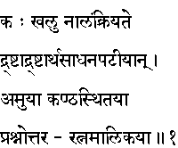
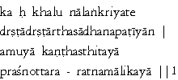

|

|
Verse 1 - Meaning:
If a person cannot find a fitting ornament for his neck which is the source of voice, in this Prasnottara-ratna-malika, will he ever be able to understand what is good for himself here and in the hereafter? (lit.- life and after death)
[Note: Prasnottara-ratna-malika - means "the necklace (malika) of gems (ratna) consisting of questions (prasna) and answers on matters of vital importance".]
|